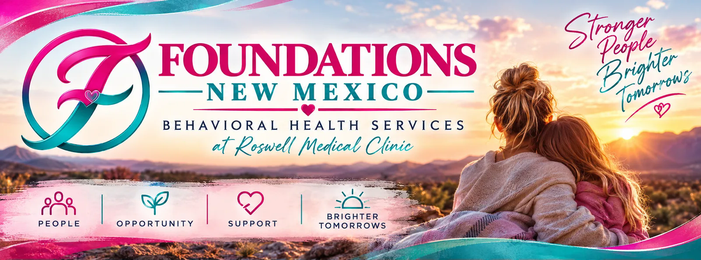
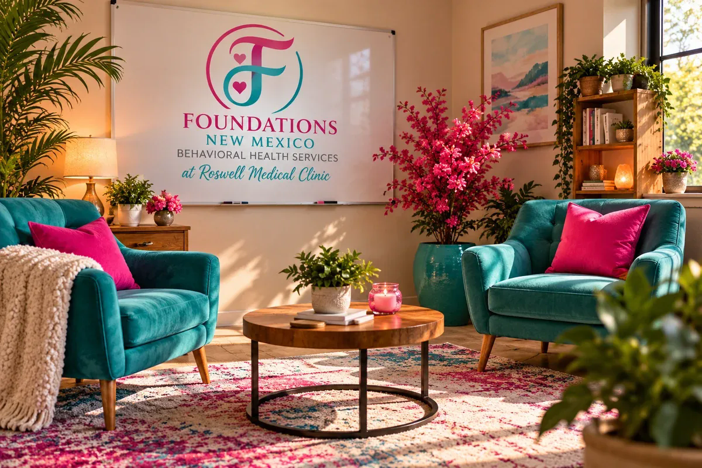
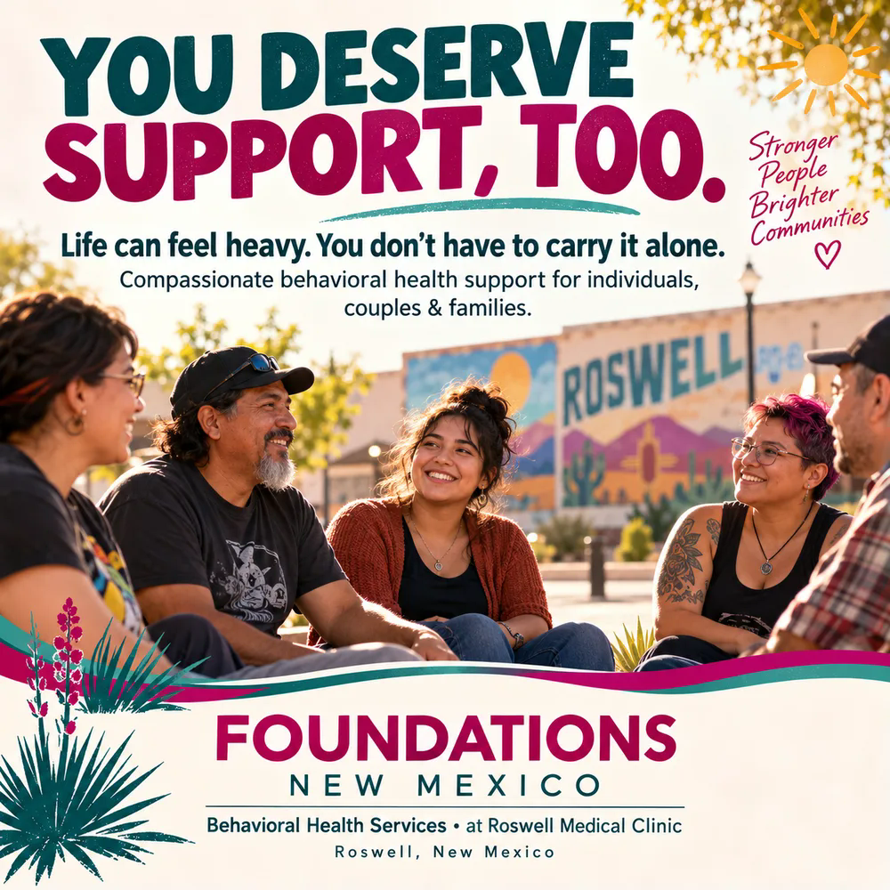
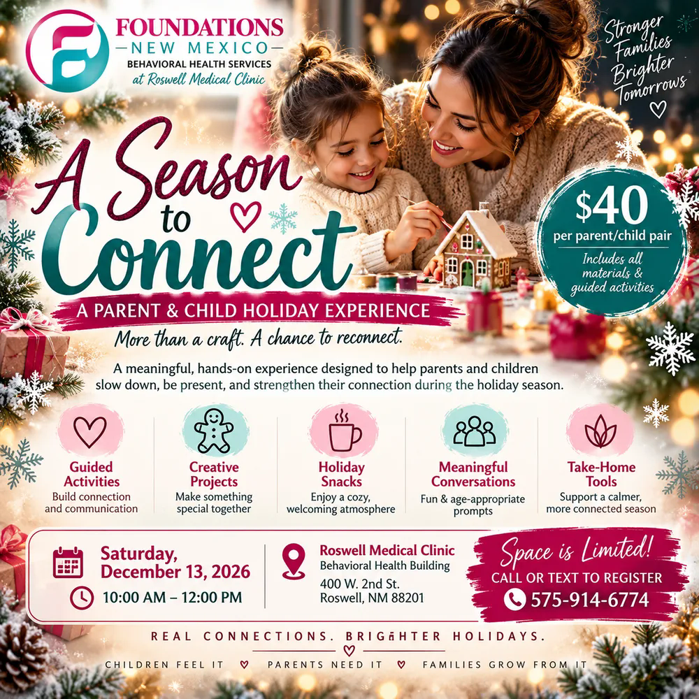

at Roswell Medical Clinic
Behavioral Health Services
Foundations New Mexico — Counseling in Roswell, NM
A healthier place to land.
Counseling for children, teens, adults, couples, and families, with weekend appointments for when weekdays don't work.
Foundations direct line (575) 914-6446 · Clinic (575) 623-3311
How we're organized
EMSPA: the behavioral health side of Roswell Medical Clinic
EMSPA brings together counseling through Foundations New Mexico the Hyperbaric Chamber, and four therapeutic technologies.
Foundations New Mexico
Counseling for children, teens, adults, couples, and families.
Invital
Ask your provider for details.
EMSCULPT
A non-invasive body-contouring technology. Ask your provider if it's right for you.
Who we see
Our rooms
Spaces designed to feel like home
Our therapist, Elizabeth, designed every room herself, so it feels warm and safe the moment you walk in.
The Ember Room
For children. Paints, beads, and toys, so therapy can feel like play.
The Spark Room
For teens. A relaxed space where teens can open up at their own pace.
The Forge
For adults. A calm, grounded room to work through what life brings.


You deserve support, too.
Life can feel heavy. You don't have to carry it alone.
- Individual counseling for children, teens, and adults
- Couples counseling
- Family and parent–child support
- Saturday & Sunday appointments available
Looking for therapeutic technology? EMSPA also offers the Hyperbaric Chamber, ExoMind (TMS), EMSELLA, Invital, and EMSCULPT.
Request an appointmentEvents
Upcoming at Foundations
A Season to Connect
Parent & child holiday experience
Saturday, December 13, 2026 · 10:00 AM – 12:00 PM
$40 per parent & child pair. Guided activities, creative projects, holiday snacks, and meaningful conversation. Space is limited.
Behavioral Health Building, 400 W. 2nd St., Roswell, NM 88201
Call to register
Location
Sessions at Roswell Medical Clinic, 111 W. Hobbs St., Roswell, NM 88203.
Behavioral Health Building: 400 W. 2nd St., Roswell, NM 88201
Hours
Foundations counseling: Mon–Fri 9:00 AM – 7:00 PM. Weekends by appointment only, for clients who can't come in during the week. Walk-ins welcome when a counselor is available.
Clinic: Mon–Fri 8:00 AM – 5:00 PM; Sat–Sun closed.
Contact
In crisis? Counseling appointments are not a crisis service. If you or someone you love is in crisis, call or text 988 (Suicide & Crisis Lifeline) or call 911. Therapy outcomes vary from person to person.